My creativity does not switch off when I close Figma. Here is what keeps me curious — and how each hobby quietly shapes the way I design.
I enjoy making things by hand, from dreamcatchers to wall hangings. Every project starts rough and gets better through small improvements.
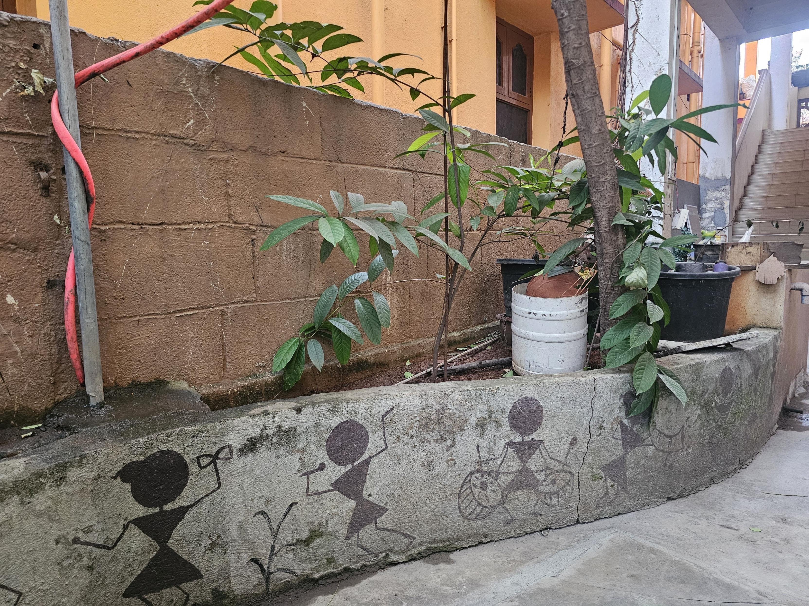
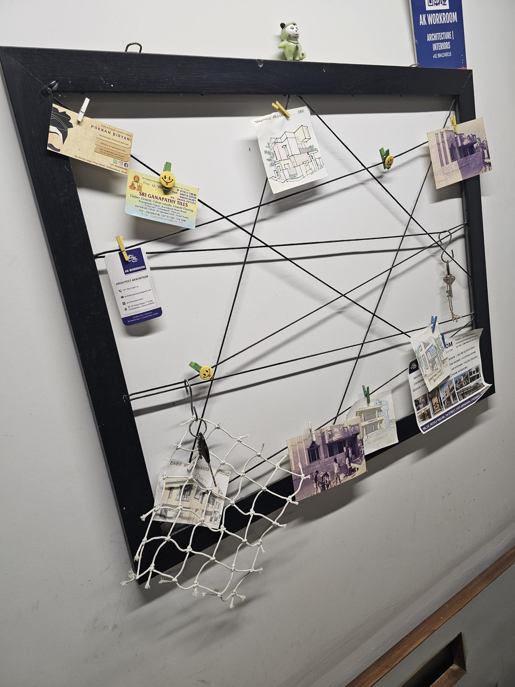
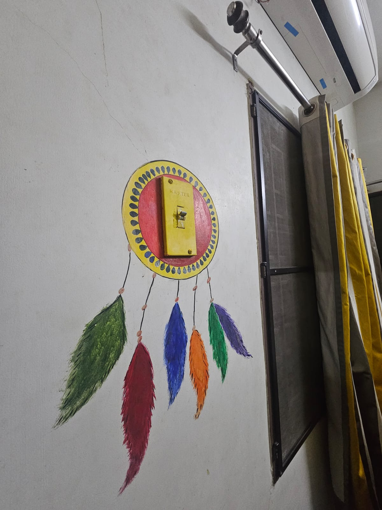
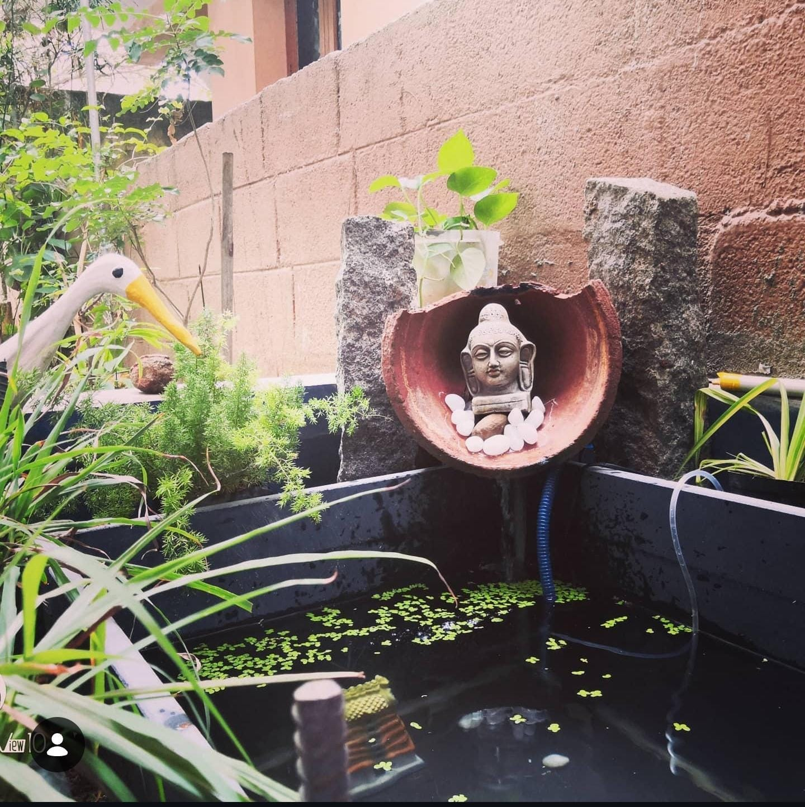
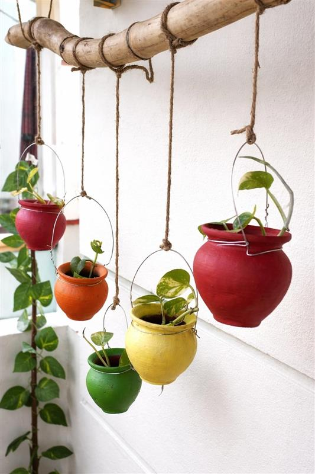
I grow plants at home — more than 15 now. Each plant teaches me that growth takes patience, observation, and small adjustments.
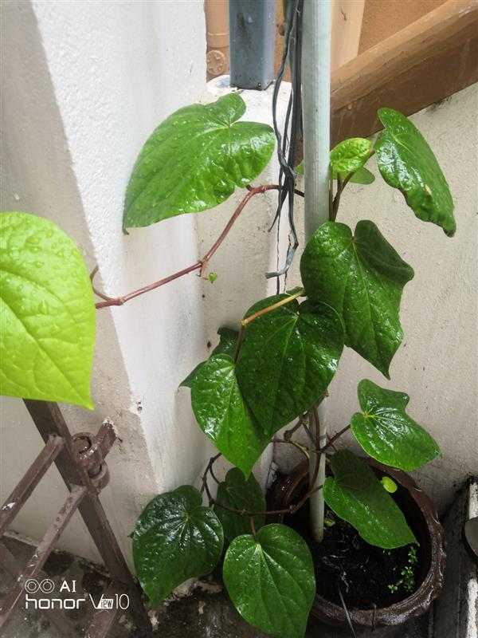
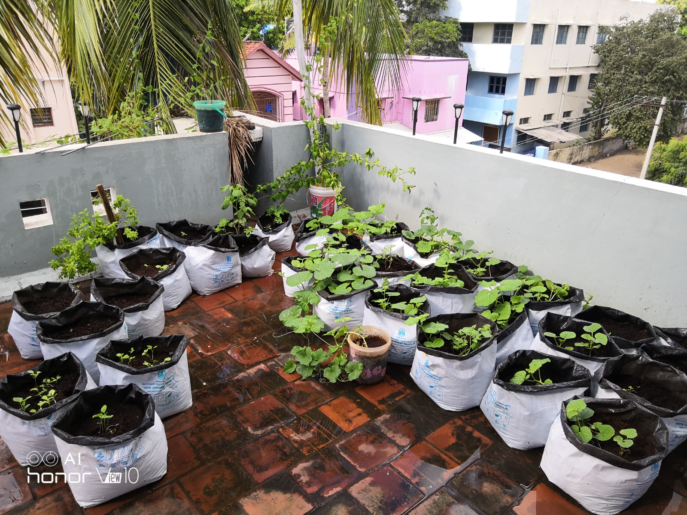
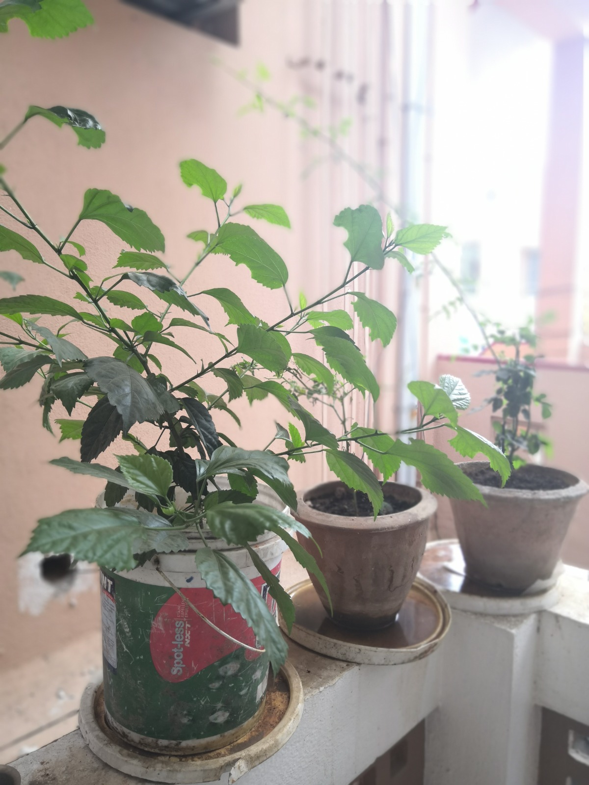
<=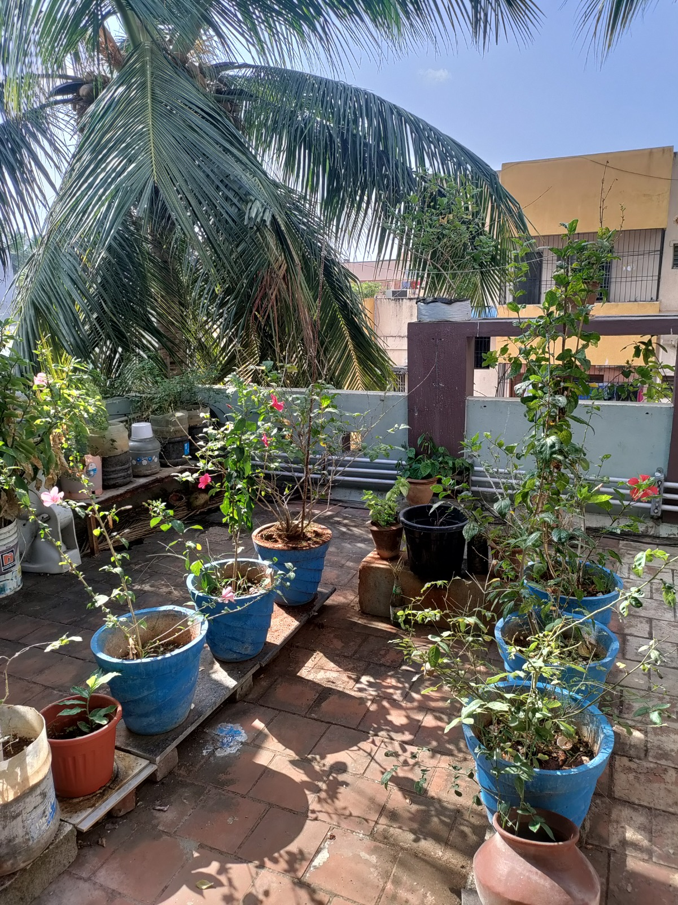
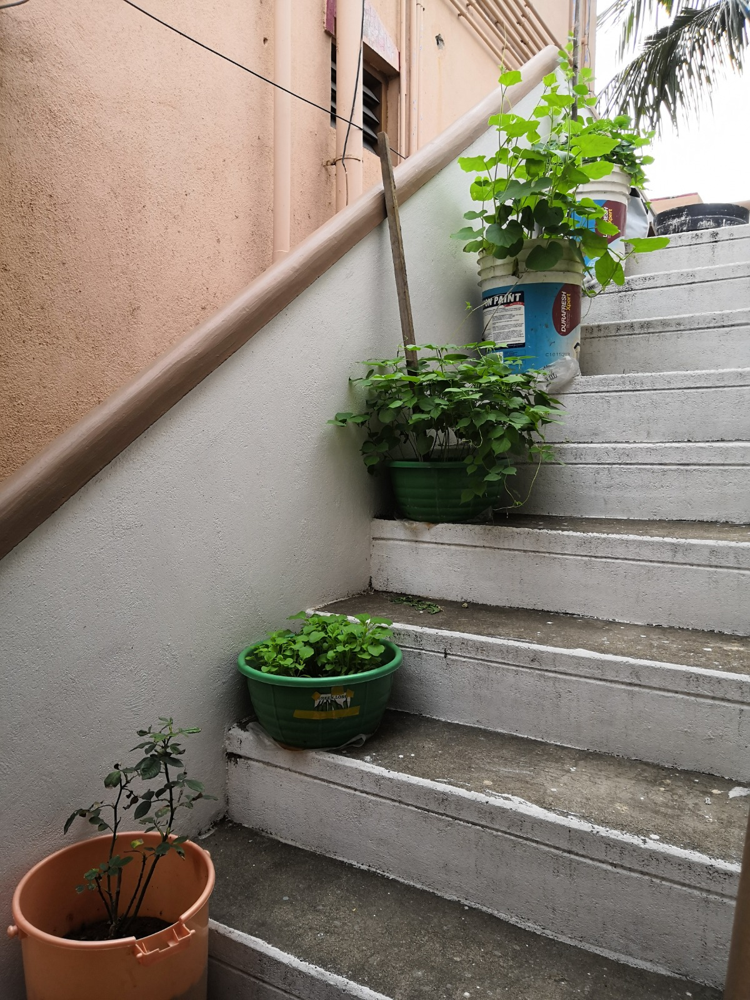
I enjoy cooking because every dish is a balance of planning, experimentation, and adjustment. Small tweaks can completely change the outcome.
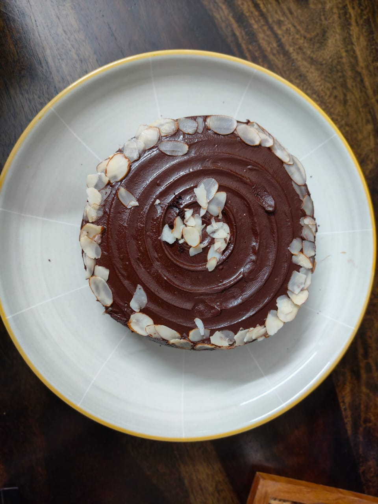
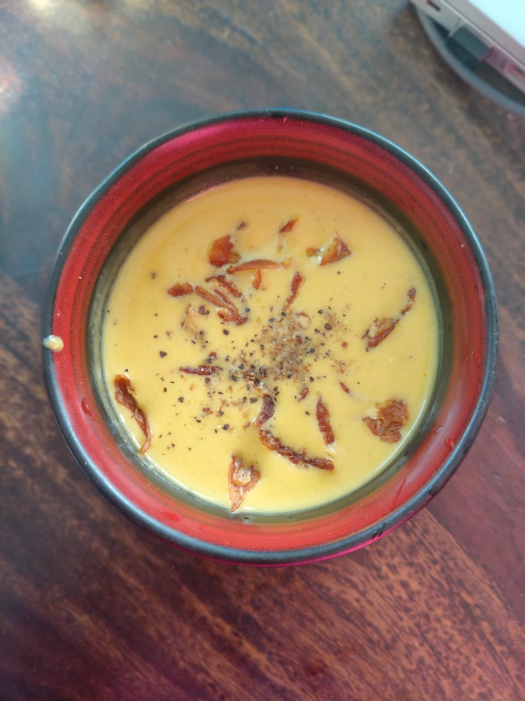
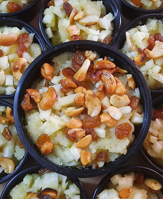
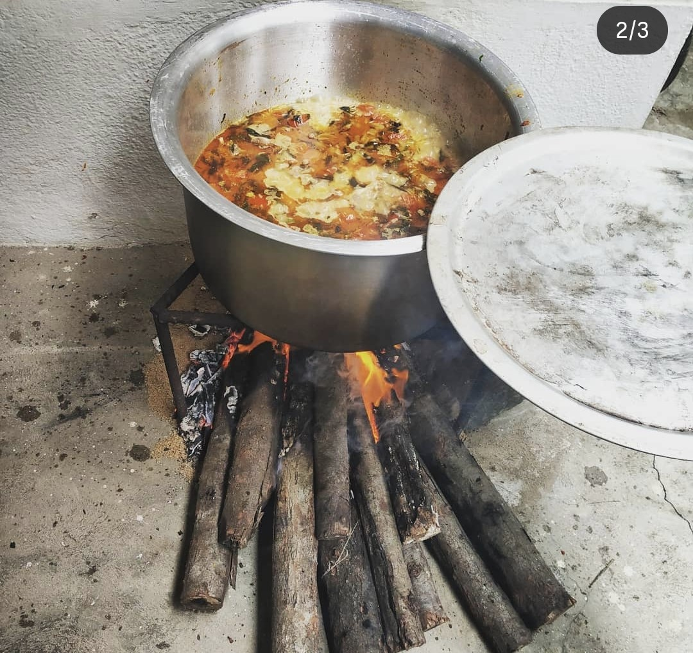
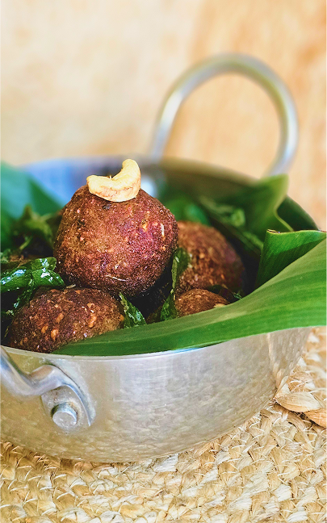